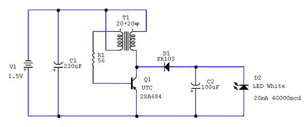
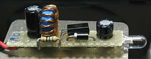
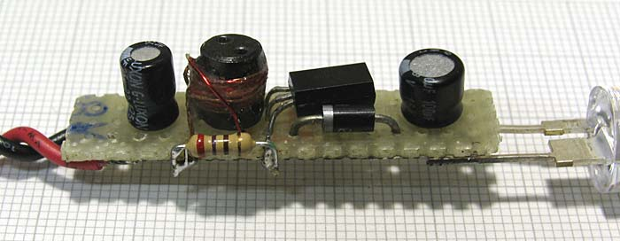
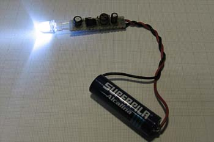
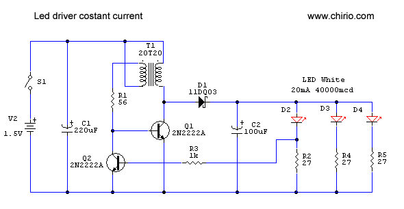

LED & illuminazione
Alimentare un led 5mm 20mA con 1 stilo 1,5V
"Fai da te" di R.Chirio
Indice della pagina
Alimentare un LED 20mA con 1,5Volt AA Cell

Questo è lo schema più semplice per alimentare correttamente un LED White da 20mA tramite una batteria da 1.5Volt tipo Stilo (AA cell) oppure solo con Ministilo (AAA cell).
Si tratta di un oscillatore a un transistor in configurazione auto oscillante con uno stadio in uscita a recupero Step-up.
Il transistor Q1 và in autoscillazione in quanto il T1 riporta il segnale del collettore sulla base con fase a 180°.
La frequenza di lavoro e di conseguenza la corrente nel LED viene determinata dal valore di R1, dai valori induttivi del T1 e dalle caratteristiche del Q1. Anche il carico rappresentato dal D1, C2 e D2 LED contribuiscono alla frequenza di oscillazione.
In questo caso ho usato un transistor generico, adatto alla commutazione:
tipo UTC2SA684 PNP VCE:60V Ic:1A f:200 MHz hfe:85
Vanno bene in genere un po' tutti i transistor in questa fascia di valori, meglio se NPN (più comuni), in questo caso, ricordarsi di invertire polarità della batteria, condensatori e diodi.
Trasformatore T1 circa 20 spire di filo rame smaltato diam. 0,15-0,2mm avvolte in bifilare su un toroide da 10mm, va bene anche su un piccolo cilindro di ferrite (6x8), oppure per avere un buon rendimento, un piccolo trasformatore a E in ferrite sarebbe ideale.

Dati di prova rilevati:
Vb=1.496V Ib=0.102A Pb=0.152W
Vled=3.41V Iled=0.0217A Pled=0.074W
fo=22.7 kHz
rendimento:
0.487
{kind=link}
Forma onda capi CE di Q1
Per comodità visiva ho invertito alto/basso la figura, la tensione ha un andamento negativo verso l'alto, in quanto usiamo un transistor PNP.
Con un NPN vedremo in normale la stessa forma d'onda.
Commenti e miglioramenti:
In questo caso usando come nucleo un toroide a traferro distribuito, non è possibile avere dei buonissimi rendimenti, consiglierei di provare con un nucleo trasformatore a doppia E in ferrite N27.
Ulteriori miglioramenti usando un diodo Schottky al posto del D1.
Questa configurazione non si presta a fornire maggiori potenze in quanto correnti più alte e tempi di conduzione tendono a sprecare molta energia sul nucleo e sul transistor, portando il sistema a rendimenti molto bassi.
Si può tentare di spremere le prestazioni per arrivare ad alimentare fino a 4 LED in parallelo oppure un solo LED da 80mA 10mm di diametro.(vedi in seguito)
La ricerca e selezione di transistor con migliori caratteristiche può dare significativi miglioramenti.
Il circuito funziona anche con una batteria ricaricabile da 1,2V è necessario modificare il valore della R1 per avere 20mA sul LED.
Se si impiega per alimentazione una torcia (D cell) da 1.5 di buona qualità possiamo avere una autonomia di oltre 100 ore, che considerando la buona resa del led a 40000mcd (migliorabile con i nuovi a 50000mcd) otteniamo una fonte luminosa compatta ed affidabile.
Febbraio 2007

Versione migliorata, usando un trasformatore in ferrite cilindrica 6x8 si migliora la resa del transistor e quindi è possibile avere in uscita una corrente maggiore, in questo caso ho messo 18+18 spire diam 0,15.
La R1 diventa 270 ohm e in uscita è possibile pilotare un led 10mm da 80mA 120000mcd, il rendimento di questa configurazione 4 volte più potente rimane circa il 0.48, per usare batterie da 1,2V ricaricabili adattare il valore di R1 per avere 80mA di corrente nel LED.

Alimentare un LED 20mA con 1,5Volt AA Cell versione migliorata con la corrente stabilizzata a 20mA/led

Ulteriore versione migliorata, usando un secondo transistor per bloccare l'oscillatore, quando la corrente nel led supera i 20mA. E' sufficiente controllare la corrente di un solo ramo per avere anche stabile la corrente su gli altri diodi, importante che siano tutti diodi led dello stesso tipo.
Il valore della R1 deve essere aggiustato per avere il funzionamento fino a circa 1,0V. Il valore esatto è in funzione dei componenti usati e del tipo di trasformatore.
Utilizzando led ultimo tipo ad altissima resa, e una batteria a torcia (tipo D) possiamo realizzare una affidabile lampada di sicurezza con una lunga autonomia.
© Roberto Chirio: all rights reserved.